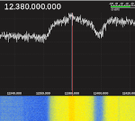
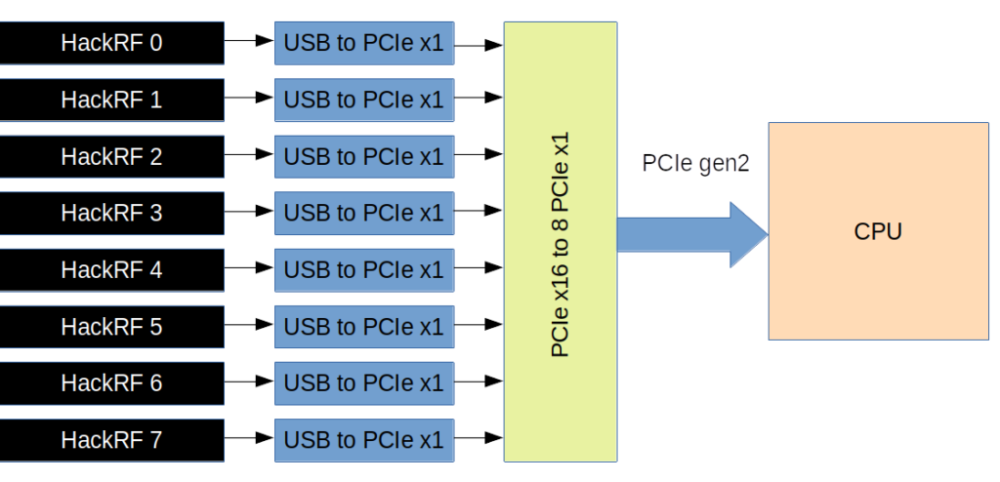
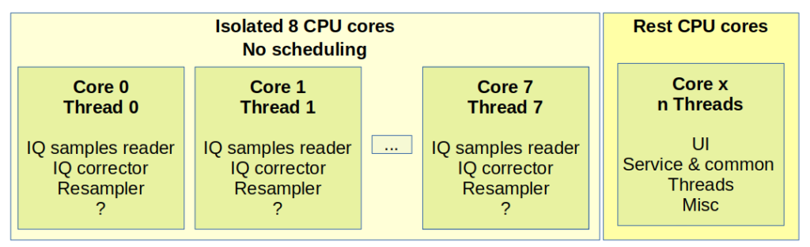

Last year I came up with the idea to build a wideband SDR. It’s fun to monitor a wider spectrum and some signals.
Sure, USRP is cool but too expensive for amateur usage.
I had a few HackRF boards, so I ordered more boards to get 8 in total. Eight HackRF boards could provide up to 160MHz bandwidth.
Project goals
The original idea is to monitor and research wideband signals, like satellite communications.
Sure, I thought about Starlink. But Starlink datastream is 200+ MHz, so my supercluster is not enough.
Anyway, it’s a great place for experiments and learning new things. Plus, it’s fun 🙂
Hardware design
I found that it’s possible to synchronize multiple HackRF boards. It’s crucial for signal integrity.
I came up with the following layout:
{kind=link}
All the boards clocked from the same stable phase-correct 10 MHz sources. Also, there is a 1PPS signal that helps to sync data sampling.
According to this paper, this should provide a decent level of synchronization between the boards.
This sync mechanism requires the latest HackRF firmware release (at least 2021.03.1). You can find additional details in this pull request.
GPS block it’s a GPS disciplined oscillator that provides 10 MHz square and 1PPS 1Hz signals.
I was lucky to find two cheap 1×4 splitter PD1140. Also, I had one 1×2 splitter ZFSC-2-2500-S+
Thus my splitter setup is the following:
{kind=link}
The total frequencies range is 700MHz – 2500 MHz. That’s fine for satellite monitoring. Sure, RF Splitter introduces a lot of fading, so additional LNA is crucial.
HackRF boards could provide the 10MHz clock output and connect in a daisy chain manner. But this also could introduce delays and phase instability.
I decided to build a separate clock distribution amplifier and provide eight phase-coherent clock lines.
{kind=link}
You can find all details about this distribution amplifier in my articles:
https://olegkutkov.me/2021/04/10/1pps-square-clock-8-channel-distribution-amplifier/
https://olegkutkov.me/2021/08/19/housing-for-the-1pps-square-clock-8-channel-distribution-amplifier/
{kind=link}
USB connection
The most tricky thing was the USB. The problem is that a single HackRF board could create up to 320 MB/s throughput at 20MHz bandwidth. Eight boards generates 2560 MB/s of data.
This value is very close to the theoretical maximum of the USB 2.0 interface. This means it’s impossible to handle two (or more) full-speed data streams with a USB hub due to the same limit of upstream port.
USB3.0 won’t help there because a typical USB3.0 hub/interface couldn’t convert USB2.0 to USB3.0 with a bandwidth increase.
USB host-controller is also can’t handle more than 2 data streams in real-time.
{kind=link}
All of this means delays and dropped data samples. And this is most undesired.
To solve this problem, I decided to install eight separate USB to PCIe host controllers and connect all the controllers to individual PCIe lines of my CPU.
8 PCIe lines provide by a PCIe x16 to 8 PCIe x1 controller board. Typically, such boards are used to connect multiple graphics adapters for crypto mining.

And here is the result. Probably the most weird-looking PC:
{kind=link}
{kind=link}
PCIe board installed into the graphics adapter slot for better performance.
System specs: CPU is AMD Ryzen 9 3900x, 12 cores/24 threads. 16 Gb RAM and 256Gb NVME PCIe Gen 3 SSD.
Software
Currently, my software is gnuradio-based. I wrote a script that handles and combines eight signals from my HackRF boards. This process requires data resampling, frequency shifts, and actual combining.
Here is my flowgraph:
{kind=link}
Click to get a full-resolution image of the flowgraph.
CorrectIQ fixes the annoying DC-spike issue. I had 8 DC-spikes; this is even worse 🙂
You can get this module here: https://github.com/ghostop14/gr-correctiq
I had to patch and rebuild the osmocom source block. Now this block support activation of the external sync signal (1PPS).
diff --git a/lib/hackrf/hackrf_common.cc b/lib/hackrf/hackrf_common.cc
index 666dc60..a2bc487 100644
--- a/lib/hackrf/hackrf_common.cc
+++ b/lib/hackrf/hackrf_common.cc
@@ -31,8 +31,14 @@ std::mutex hackrf_common::_usage_mutex;
std::map<std::string, std::weak_ptr> hackrf_common::_devs;
std::mutex hackrf_common::_devs_mutex;
+typedef enum {
+ HW_SYNC_MODE_OFF = 0,
+ HW_SYNC_MODE_ON = 1,
+} hw_sync_mode_t;
+
hackrf_common::hackrf_common(const std::string &args) :
_dev(NULL),
+ _final_serial(""),
_sample_rate(0),
_center_freq(0),
_freq_corr(0),
@@ -47,7 +53,6 @@ hackrf_common::hackrf_common(const std::string &args) :
hackrf_device_list_t *list;
int dev_index;
std::string target_serial = "0";
- std::string final_serial = "";
dict_t dict = params_to_dict(args);
if (dict.count("hackrf") > 0 && dict["hackrf"].length() > 0) {
@@ -99,19 +104,19 @@ hackrf_common::hackrf_common(const std::string &args) :
}
if (list->serial_numbers[dev_index]) {
- final_serial = list->serial_numbers[dev_index];
+ _final_serial = list->serial_numbers[dev_index];
}
{
std::lock_guard guard(_devs_mutex);
- if (_devs.count(final_serial) > 0 && !_devs[final_serial].expired()) {
- _dev = hackrf_sptr(_devs[final_serial]);
+ if (_devs.count(_final_serial) > 0 && !_devs[_final_serial].expired()) {
+ _dev = hackrf_sptr(_devs[_final_serial]);
} else {
ret = hackrf_device_list_open(list, dev_index, &raw_dev);
HACKRF_THROW_ON_ERROR(ret, "Failed to open HackRF device")
_dev = hackrf_sptr(raw_dev, hackrf_common::close);
- _devs[final_serial] = static_cast<std::weak_ptr>(_dev);
+ _devs[_final_serial] = static_cast<std::weak_ptr>(_dev);
}
}
@@ -320,6 +325,21 @@ double hackrf_common::get_gain( size_t chan )
return _amp_gain;
}
+int hackrf_common::hw_sync_enable()
+{
+ std::cout << "Device " << _final_serial << " enable clk_out" << std::endl;
+ std::cout << "Device " << _final_serial << " set HW_SYNC_MODE_ON" << std::endl;
+
+ hackrf_set_clkout_enable(_dev.get(), 1);
+
+ return hackrf_set_hw_sync_mode(_dev.get(), HW_SYNC_MODE_ON);
+}
+
+int hackrf_common::hw_sync_disable()
+{
+ return hackrf_set_hw_sync_mode(_dev.get(), HW_SYNC_MODE_OFF);
+}
+
std::vector< std::string > hackrf_common::get_antennas( size_t chan )
{
return { get_antenna( chan ) };
diff --git a/lib/hackrf/hackrf_common.h b/lib/hackrf/hackrf_common.h
index d1ab47b..bc8fa43 100644
--- a/lib/hackrf/hackrf_common.h
+++ b/lib/hackrf/hackrf_common.h
@@ -74,6 +74,9 @@ protected:
double set_gain( double gain, size_t chan = 0 );
double get_gain( size_t chan = 0 );
+ int hw_sync_enable();
+ int hw_sync_disable();
+
std::vector< std::string > get_antennas( size_t chan = 0 );
std::string set_antenna( const std::string & antenna, size_t chan = 0 );
std::string get_antenna( size_t chan = 0 );
@@ -99,6 +102,8 @@ private:
static std::map<std::string, std::weak_ptr> _devs;
static std::mutex _devs_mutex;
+ std::string _final_serial;
+
double _sample_rate;
double _center_freq;
double _freq_corr;
diff --git a/lib/hackrf/hackrf_source_c.cc b/lib/hackrf/hackrf_source_c.cc
index 03ea3bd..f7b97e1 100644
--- a/lib/hackrf/hackrf_source_c.cc
+++ b/lib/hackrf/hackrf_source_c.cc
@@ -450,3 +450,20 @@ osmosdr::freq_range_t hackrf_source_c::get_bandwidth_range( size_t chan )
{
return hackrf_common::get_bandwidth_range(chan);
}
+
+void hackrf_source_c::set_time_source(const std::string &source, const size_t mboard)
+{
+ std::cout << "hackrf_source_c::set_time_source = " << source << std::endl;
+
+ if (source == "external") {
+ hackrf_common::hw_sync_enable();
+ } else {
+ hackrf_common::hw_sync_disable();
+ }
+}
+
+std::string hackrf_source_c::get_time_source(const size_t mboard)
+{
+ return "";
+}
+
diff --git a/lib/hackrf/hackrf_source_c.h b/lib/hackrf/hackrf_source_c.h
index 0d38ac0..ba8ed80 100644
--- a/lib/hackrf/hackrf_source_c.h
+++ b/lib/hackrf/hackrf_source_c.h
@@ -119,6 +119,9 @@ public:
double get_bandwidth( size_t chan = 0 );
osmosdr::freq_range_t get_bandwidth_range( size_t chan = 0 );
+ void set_time_source(const std::string &source, const size_t mboard = 0);
+ std::string get_time_source(const size_t mboard);
+
private:
static int _hackrf_rx_callback(hackrf_transfer* transfer);
int hackrf_rx_callback(unsigned char *buf, uint32_t len);
After the block installation, it’s possible to select “MBx: Time Source” –> “External”. Where “x” it’s the radio number (0-8).
This option activates HackRF 1PPS sync input.
{kind=link}
Sure, this flowgraph is resource-hungry and does not work smoothly, even on my Ryzen 9 CPU. That’s why I’m slowly rewriting all this to C++.
The general idea is to isolate 8 CPU cores and assign interrupts and basic flow processing for each isolated CPU core.
Left cores would run generic threads, UI interface, and so on.

I believe this should provide the best performance.
{kind=link}
Results
Currently, I’m working with Ku-band satellites signals.
My setup contains two amplifiers and a high-pass filter. My Satellite LNB controller controls the antenna LNB.
{kind=link}
Resulting spectrum at 12.38 GHz. Two DVB-S transponders are visible:
{kind=link}
{kind=link}
The raw recording could be “played” with GQRX:
{kind=link}
Is it possible to demodulate the signal? Nope.
The main problem is that this is not a real continuous spectrum. I had to use some frequency overlaps to avoid “gaps”. Those gaps are the results of the upsampling process.
Plus, there might be some frequency instabilities; I need to do some additional measurements.
Honestly, I don’t know how I’m to work around this “gaps issue”. Not sure if it’s even possible, but work continues.
Thanks for reading!
Cool project! I repeat it at the moment. I have already bought everything, it remains only to configure! Thank you so much for the work done and for being open to other users!
This is really amazing work! Have you looked at all into the interleaved sampling algorithm software like qspectrumanalyzer uses to combine multiple sweeps into one wideband spectrum? It splits the bandwidth of each sweep step into 3 parts (+ guard bands). Working up in frequency you’d have:
the lower band edge (thrown away)
the lower piece (used)
the middle piece (around the DC spike) – thrown away
the upper piece (used)
the upper band edge (thrown away)
the lower piece, middle piece, and upper piece are all the same bandwidth. Then it interleaves the tuning frequencies so that on the next step, the lower piece covers the center piece of the previous step that was thrown away (to eliminate the DC spike), the middle piece of that scan (which is thrown away) lands on the upper piece of the previous scan, and then you get one new slice. Somewhere in the documentation, it goes into a good explanation of how the sampling works, though I had to read it a couple of times to understand what they were getting at.
Obviously here rather than tuning steps on the same radio, you could do the same thing with each hackrf in parallel
Also, the HackRF has a hardware sweep mode that allows it to sweep a large frequency range without individual tuning commands being sent at each step which makes it’s sweeps really fast – great for simple spectrum analysis, but this is clearly superior (a bunch of synchronized hackrf’s in parallel) to do signal analysis.
Really interested in following the future updates!
Hi Andrew,
I will check the qspectrumanalyzer algorithms, it sounds interesting.
Thanks!
LimeSDR might be another SDR board to try in this configuration, as it has USB 3 and much much higher bandwidth than the HackRF for the same price (61.44MHz + USB 3 for $300 vs 20MHz + USB 2 for $300).
Yeah. I thought about the Lime, but it is more expensive.
I bought my HackRf boards for $90, and I already had some boards at the start of the project. That’s why I stuck to these boards.
Maybe I will switch to the Lime after the war.
If you knew that you could have achieved all of this without much of the hassle using the Xilinx RFSoC Ultrascale+ FPGA, would you consider it? If so, how would you do it? BTW, in case you are not aware this RFSoC would have removed all synchronization issues and given you 8 high speed ADCs and 8 high speed DACs, plus high speed PCIe, which would have allowed you to demodulate your signals like you wanted to do.
RFSoC Ultrascale+ or even USRP radio is way out of the budget of the hobby project.